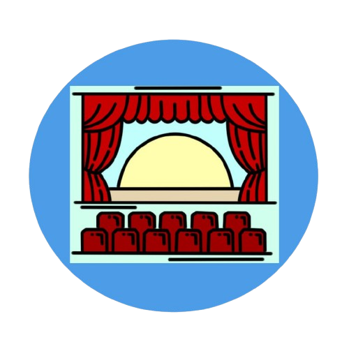

Літній театр у Вінниці — це відкритий культурний майданчик, розташований у Центральному парку імені Леонтовича, який діє переважно у теплу пору року. Він служить місцем для проведення концертів, театральних вистав та інших мистецьких заходів просто неба, збираючи жителів і гостей міста. Завдяки особливій атмосфері і зручному розташуванню, Літній театр є популярною локацією для культурного відпочинку у Вінниці.

Сцена театру — це центральний простір, де відбувається дія вистави, і на якому актори втілюють свої ролі перед глядачами. Вона може бути різної форми та розміру, залежно від театрального залу, і часто обладнана сучасними технологіями для освітлення, звуку та спецефектів. Декорації, костюми та реквізит, розташовані на сцені, допомагають створити атмосферу та занурити глядачів у світ вистави. Сцена — це місце, де оживає мистецтво, з'єднуючи акторів і глядачів у спільному емоційному досвіді.
Театральний бінокль — це компактний оптичний прилад для спостереження за сценічними виставами з віддалених місць у залі. Він дозволяє глядачам бачити дрібні деталі на сцені без втрати якості зображення.